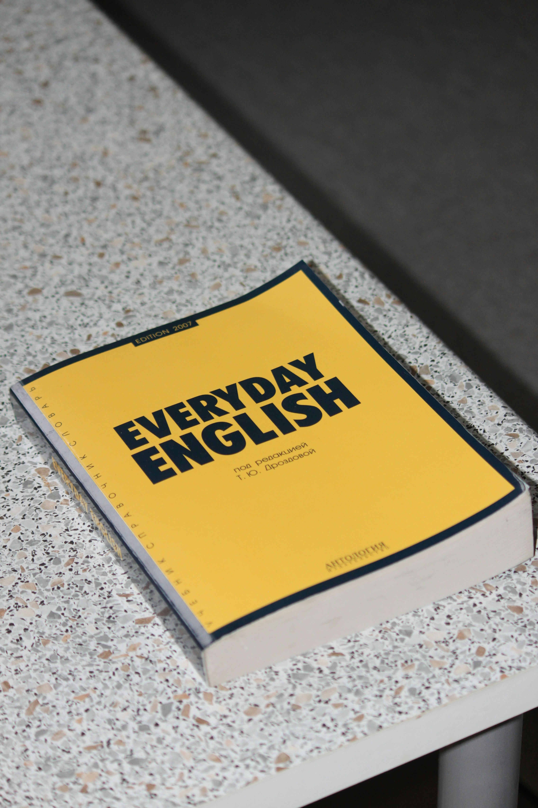
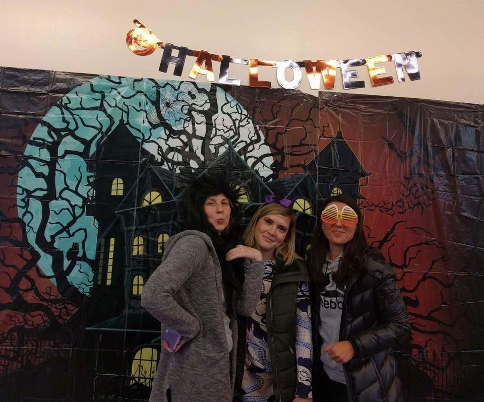
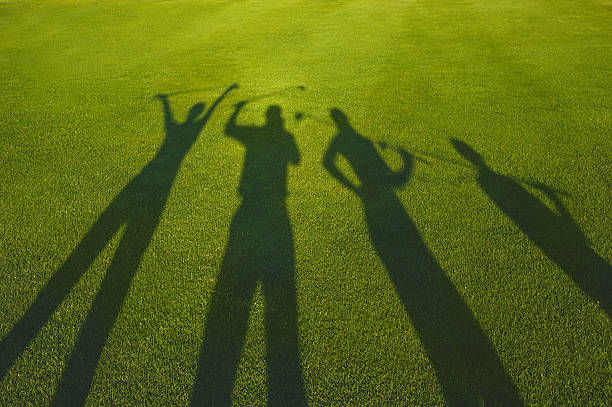
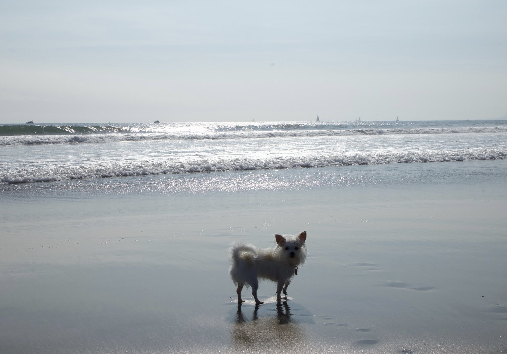

My Achievements
-
Leaning English
Studying English at LWTech transformed my communication and my future, and I invite others to explore the opportunities it offers

-
Adapting to a new culture

-
Earning a Bachelor's degree in Business Administration, Accounting
Choosing the University of Washington Bothell (UWB) was a powerful step in my journey to grow, learn, and shape my future.

-
Finding a full-time job

-
Continuing my Master's degree while working full time
I continued my master’s journey at UWB while working full time, pushing myself to grow professionally and academically.

-
Being a wife and a mother of two children

-
01 assignment in HTML100 class
link
